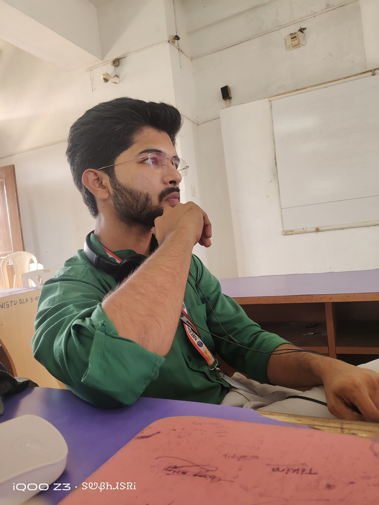

Hello! I'm G. Mahesh, a passionate tech enthusiast exploring embedded systems and web development.
🎓Masters in Computer Application (MCA)
NIST University, Berhampur (2024-2026)
🎓B.Sc. in Electronics & Telecommunication
Khallikote Unitary University, Berhampur (2021-2024)
During my graduation, I built a Fingerprint-Based Voting System using Arduino. This sparked my interest in technology and problem-solving.
Recently, I started learning HTML and web development, and I'm excited to combine my hardware knowledge with web technologies.
During my final year of graduation, I was selected for Wipro’s Work Integrated Learning Program (WILP) and was offered a position as a System Support Engineer. However, I made the decision to pursue higher education instead, as I wanted to expand my technical knowledge and work on more advanced projects.
Although I did not accept the offer, the selection process helped me understand industry expectations and motivated me to improve my skills further.